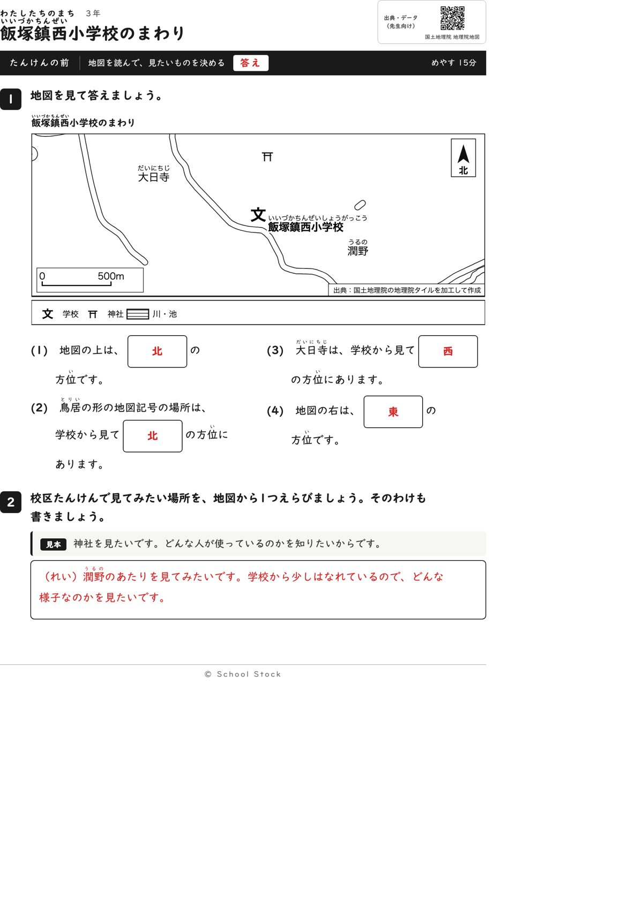
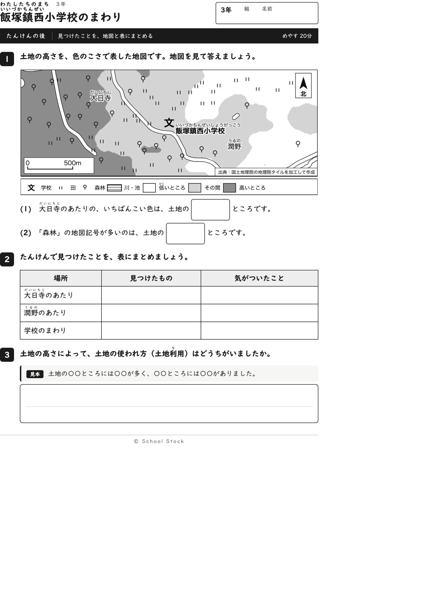
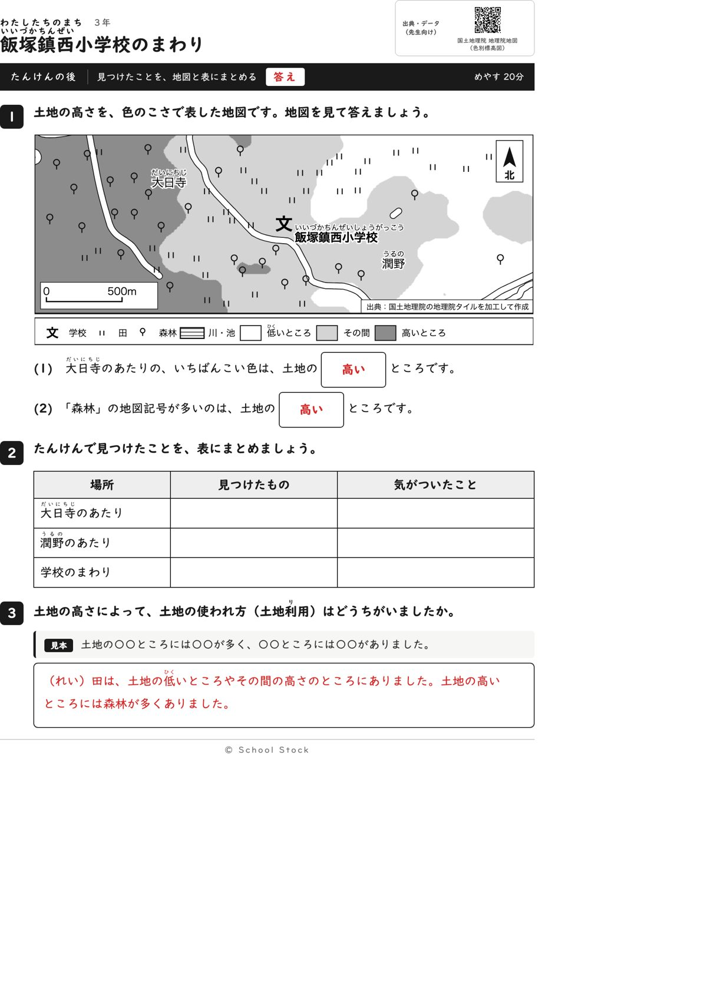
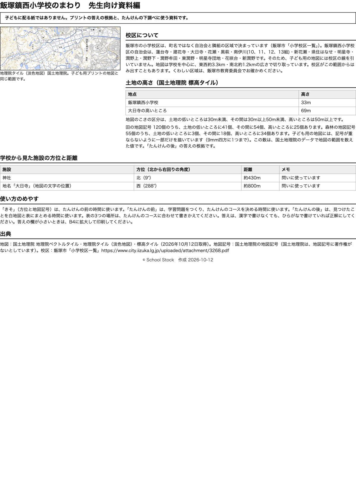

紙





直すところ
直すところはありません。
1回目のレビューで出た直し（2件・道具を直して作り直しました）
| 紙 | どこ | 何が困るか |
|---|---|---|
| たんけんの後 | 1番(3)の問いの文（飯塚鎮西小学校のあるところは、□の色です） | 箱に「その間」と書くのか「うすい灰色」と書くのかが分からず、答えが割れます。「その間の色」という言い方も、子どもには意味が取りにくいです。 |
| たんけんの後 | 3番の書く問い（土地の高いところと低いところで、土地の使われ方はどうちがいましたか） | 子ども用の紙に見本がなく、3行の白い欄だけです。たんけんの前の2番には見本があるのに、ここにはありません。例がないと1行目で手が止まる子と、書く前に諦める子が出ます。 |
専門家団の声（いまの紙を見て）
香月八重筆頭・全学年
2回目に残した注文はありませんでした。今回も、前は上、神社、大日寺、右の四問で、北、西、東がそれぞれ地図から一つに決まり、答えを別の問いの文に出すこともありません。後は大日寺のあたりのいちばんこい色と、森林の多い所の二問で、どちらも「土地の□ところです」の同じ形です。この紙でつかむことは、高い土地に森林が多いことだと1文で言えます。3番にも型と答えの例が付いています。3年の範囲に収まっています。
日隈耕平社会
神社は北9度、大日寺は西288度で、資料編と地図が合っています。大日寺の高いところは69mで、地図の最も濃い色と合います。森林55個のうち高いところは34個で、答えと数が合っています。資料編に「記号は一部だけを描いています」と書いてあります。文字の重なりを見ました。学校名の文字の左端が道の線に触れていて、白い縁取りで線が少し切れていますが、読めます。後の地図では森林の記号が道に乗る所が2か所、田の記号が道の端に乗る所が1か所あります。答えには響かないので直しには入れません。
藤川湊すぐ終わる子
前は短い時間で終わります。後は(2)まであり、早く終わったら田の記号が低い、その間、高いのどこに多いかを数えたくなります。
田淵さくら例がないと止まる子
前は北と東の問いがあり、慣れてから西の問いに進めます。後は(1)も(2)も「土地の□ところです」の同じ形なので、箱に何を書くか迷いません。3番の見本もあるので書き出せます。
轟大和読む前に諦める子
後の(1)は場所と「いちばんこい色」が書いてあるので、濃い色を探せばよいと分かります。(2)も同じ形で、読んでつかえません。3番は型があるので書けそうです。